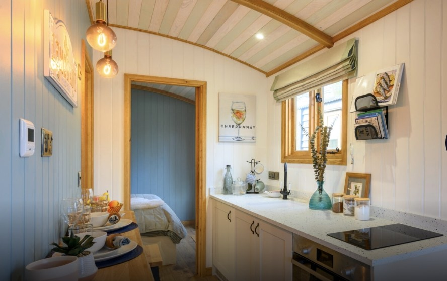

Reliable and Affordable Home Maintenance
Practical repairs, installations and improvements completed with care and attention to detail.

Welcome to Lowe Maintenance
Lowe Maintenance provides reliable home maintenance, repair and improvement services for homeowners, landlords and small businesses.
From everyday household repairs to plumbing, electrical fixtures, carpentry and wall mounting, we offer a personal and straightforward service at fair prices.
Our Services
We can help with a wide range of home maintenance jobs, including:
- Tap, toilet and minor plumbing repairs
- Light fitting, socket and switch replacements
- Door, lock and cupboard repairs
- TV, shelf and wall mounting
- Flat-pack furniture assembly
- Flooring, tiling, grouting and resealing
- Vinyl wrapping for cupboards and worktops
- General household repairs and improvements
View our Services page for more information about the work we offer.
Why Choose Lowe Maintenance?
- Fair pricing: Clear and affordable prices without the overheads of a large company.
- Versatile experience: Experience across domestic, hotel and general property maintenance.
- Personal service: You deal directly with the people carrying out the work.
- Quality workmanship: Every job is completed carefully, whether it is a small repair or a larger improvement.
- Reliable and approachable: Straightforward communication and honest advice from start to finish.
Small Jobs Welcome
You do not need to have a large project. We are happy to help with smaller repairs, replacements and household jobs that larger companies may not take on.
Get a Quote
Need something repaired, fitted, wrapped or improved? Contact Lowe Maintenance to discuss the job and receive a straightforward quote.